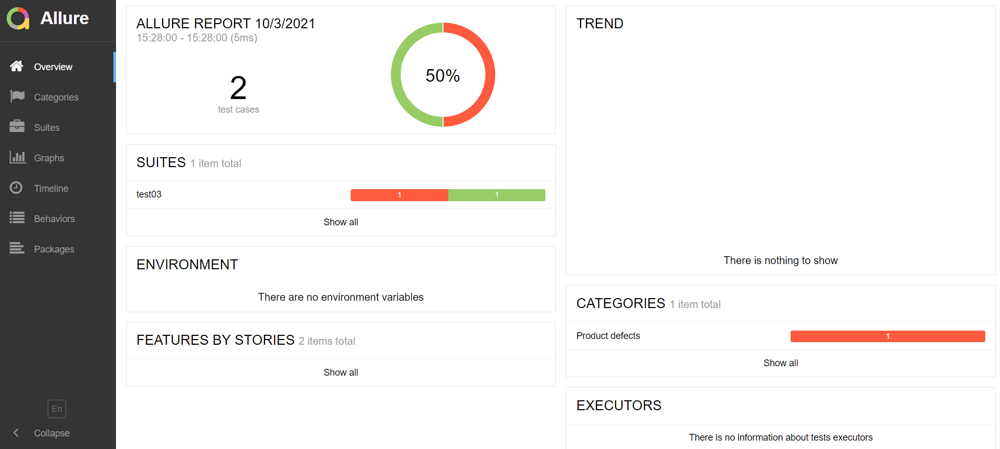

第2节：Pytest测试框架
目标
[x] 掌握Pytest测试框架的运用
[x] 使用pytest-html、allure生成测试报告
什么是Pytest？
Pytest是一个非常成熟的全功能的Python测试框架，主要有什么特点。
·简单灵活，容易上手，文档丰富。
·支持参数化，可以细粒度地控制要测试的测试用例。
·能够支持简单的单元测试和复杂的功能测试
·可以很好的和CI工具结合，如Jenkins
编写规则
测试文件以test开头(以test结尾也可以)
测试类以Test开头，并且不能带有init方法
测试函数以test开头
断言使用基本的assert即可
Console参数介绍
-v 用于显示每个测试函数的执行结果
-q 只显示整体测试结果
-s 用于显示测试函数中print()函数输出
-x，在第一个错误或测试失败立即退出
执行测试
方式1：配置Pycharm执行
Tools——>Python Integrated tools ——>Default test runner
方式2：main方法
pytest.main(['-s','-v','.py文件'])
方式3：命令行
pytest -s -v .py文件
Pytest标记
pytest查找测试策略
默认情况下，pytest会递归查找当前目录下所有以test开始或结尾的Python脚本；执行文件内的所有以test开始或结束的函数或方法
标记测试函数
由于某些原因（某功能未开发完成），我们只想指定的测试函数。在pytest有几种方式可以解决：
第一种，显示指定函数，通过 ：：标记
第二种，使用模糊匹配，使用 -k选项标识
第三种，使用pytest.mark在函数进行标记
Pytest参数化处理
在pytest中，也可以使用参数化测试，即每组参数都独立执行一次测试。
使用pytest.mark.parametrize(argnames,argvalues)
数据格式：列表、元组、字典
Pytest fixture
定义fixture跟定义函数差不多，唯一区别就是在函数上加个装饰器@pytest.fixture()
注意：fixture命名不要以test开头，跟用例区别开。fixture是有返回值的，没有返回默认None
Pytest setup和teardown
每次开始和结束都去执行一次。通过setupClass和teardownClass，需要配合@classmethed装饰器一起使用。
模块级:（setup_module/teardown_module）开始于模块始末，全局
函数级：（setup_function/teardown_function）只对函数用例生效（不在类中）
类级：（setup_class/teardown_class）只在类中前后运行一次（在类中）
方法级：（setup_method/teardown_method）开始于方法始末（在类中）
类里面的（setup/teardown）运行在调用方法的前后
生成测试报告
通过pytest-html生成报告
1.安装第三方库
pip install pytest-html
生成junitxml格式的测试报告 命令：--junitxml=path
生成ResultLog格式的测试报告 命令：--resultlog=report/log.txt
生成 Html 格式的测试报告，命令: --html=OutPuts/reports/report.html (相对路径)
2.生成html报告
import pytest
#函数级别
@pytest.fixture(scope='function')
def setup_function():
print("---开始----")
def test_01(setup_function):
a,b=1,2
a,b=b,a
assert b==1
def test_02(setup_function):
assert 2==1+1
import pytest
if __name__ == '__main__':
pytest.main(["--html=./reports/report.html","test01.py"])
通过allure生成测试报告
1.安装allure
pip install allure-pytest
windows下载allure文件，并配置好环境变量，用于后面命令使用
allure用例描述
| 使用方法 | 参数值 | 参数说明 |
|---|---|---|
| @allure.epic() | epic描述 | 敏捷里面的概念，往下是feature |
| @allure.feature() | 模块名称 | 功能点的描述 |
| @allure.story() | 用户故事 | 用户故事 |
| @allure.title() | 用例标题 | 重命名html报告名称 |
| @allure.testcase() | 测试用例的链接地址 | 对应功能测试用例系统的case |
| @allure.issue() | 缺陷 | 对应缺陷管理系统里面的链接 |
| @allure.description() | 用例描述 | 测试用例的描述 |
| @allure.step() | 操作步骤 | 测试用例的步骤 |
| @allure.severity() | 用例等级 | blocker，critical，normal，minor，trivial |
| @allure.link() | 链接 | 定义一个链接，在测试报告展现 |
| @allure.attachment() | 附件 | 报告添加附件 |
2.终端命令生成测试报告
#生成测试报告
pytest test3.py --alluredir=./reports/allure
#运行serve allure需要自己配置好变量环境才能保证终端可以输入不报错
allure serve ./reports/allure
